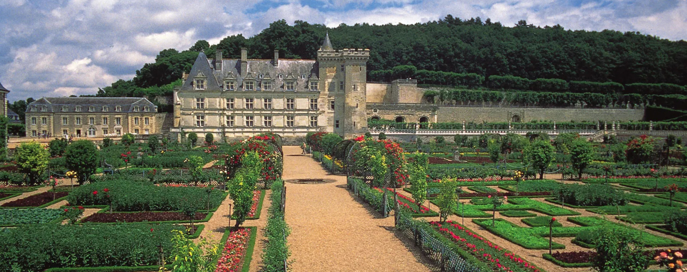

Explore France is a tourism guide designed to introduce travelers to the beauty, culture, and unforgettable experiences found throughout France. Our website provides carefully researched information about destinations, famous landmarks, and traditional French cuisine to help visitors discover the charm of this remarkable country.
Whether you are planning your first trip to Paris, dreaming of cycling through Burgundy's vineyards, or searching for the perfect Provençal village to call home for a week, Explore France is here to inspire and inform every step of your journey.
Our mission is to inspire travelers to explore the many wonders of France by sharing useful travel information, cultural highlights, and destination guides. We aim to make planning your journey easier and more exciting — and to ensure that when you arrive in France, you feel prepared to experience it fully.
Discover iconic cities like Paris, Lyon, Nice, and Bordeaux — each with a unique character, cuisine, and cultural scene waiting to be explored.
Explore world-famous attractions including the Eiffel Tower, the Louvre Museum, Notre-Dame Cathedral, and the Palace of Versailles.
Learn about traditional French dishes, regional specialties, pastries, wines, and cheeses — a culinary heritage unlike any other in the world.
Discover France's festivals, museums, performing arts, and living cultural traditions that have shaped civilization for centuries.
Find practical guidance on when to visit, how to get around, what to pack, and how to make the most of every day in France.
Go beyond the guidebooks with lesser-known destinations — charming villages, regional cuisines, and local festivals that most tourists never discover.
We believe that travel has the power to broaden perspectives, deepen understanding, and forge connections between people and cultures. Through Explore France, we hope to inspire a genuine curiosity for French life — not just the famous monuments, but the everyday rhythms, the regional traditions, and the warmth of French hospitality that makes every visit unforgettable.
France is not merely a destination — it is an experience. And we are here to help you live it.